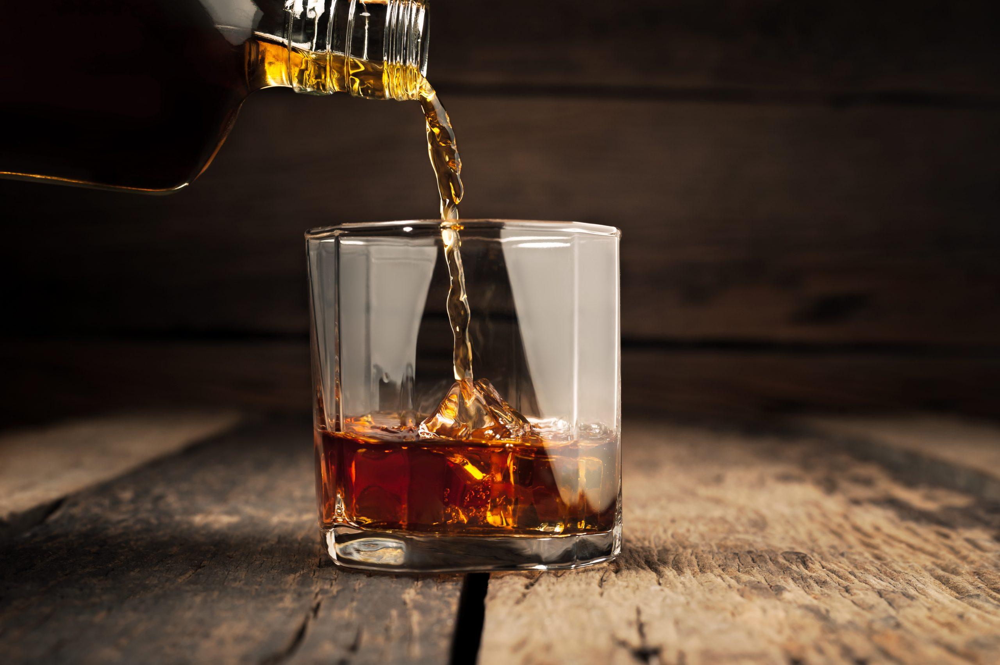
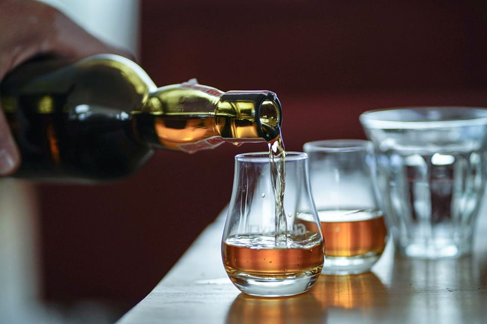
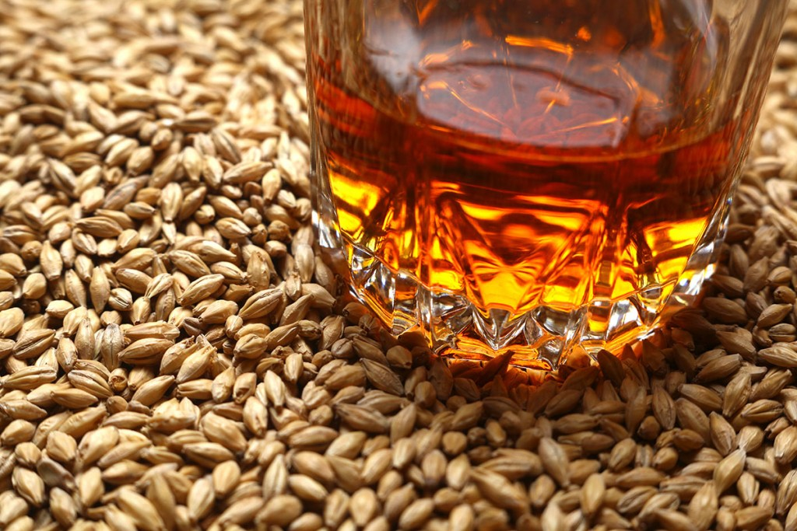
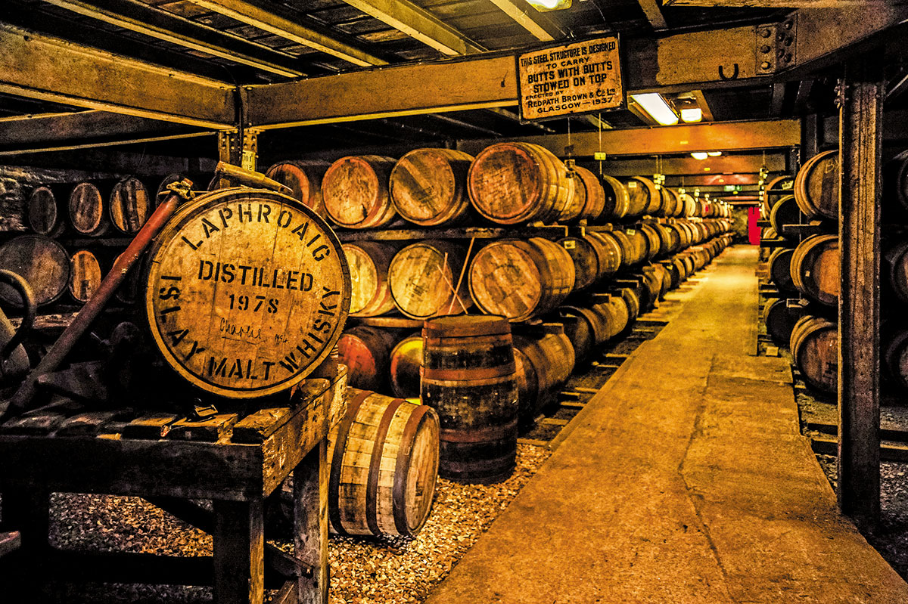

Sobre nosotros
Una forma moderna de tomar Whisky
Somos una empresa que aparte de dedicarnos a vender una de las
bebidas espirituosas mas importantes del mundo, nos enfocamos en que
comprendas con nuestro conocimiento este universo unico e
inigualable. Entenderas como es posible tomarla, cual es el
recipiente exacto para beberlo, de donde proviene y como esta
compuesto, para que finalmente puedas adentrarte en el consumo del
mismo. Siempre bebiendo responsablemente, con conciencia y
divertimiento.
Somos Wish a Whisky.
Como tomar Whisky?
Una pregunta que se escucha la mayor parte del tiempo es
"¿Cómo debemos tomar whisky?".
La respuesta es bastante fácil,
¡Como a vos te gusta!.
Es importante
disfrutar del whisky, al final es por eso que principalmente lo
estás bebiendo. El objetivo es DISFRUTARLO.

En que tomamos Whisky?
Principalmente necesitas un vaso. Pero...
¿Cómo está tu estado de ánimo en este momento?
¿Simplemente probarás el whisky o te refrescarás después de un
largo día?
¿Vas a usar hielo o no?
Todo esto influye en nuestra elección de cristalería.

De que esta hecho el Whisky?
La cuestiones tecnicas de este gran mundo.
¿Cuales son los componentes requeridos para el Whisky?
¿Malta? ¿Grano? ¿Cebada? ¿Agua? ¿Alcohol?.
Combinaciones de lo mencionado nos otorgaran un buen momento.

De donde viene el Whisky?
El Whisky nació en Irlanda y su elaboración se extendió
rápidamente en Escocia. Es un destilado de cereal envejecido en
barricas de madera. Los pioneros en destilarlo y formalizar el
proceso de elaboración fueron monjes, de ellos pasó a los
campesinos que instalaron infinidad de alambiques caseros. Una
pregunta que se escucha la mayor parte del tiempo es

Donde encontrarnos?
Podemos agendar una visita por buenos aires para que disfrutes de la
experiencia Wish a Whisky.
Debajo vas a encontrar los sitios que usualmente recomendamos para reunirnos.
Registrate!